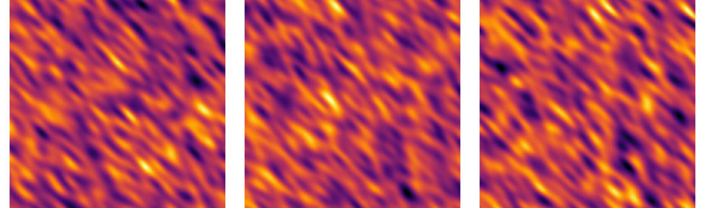
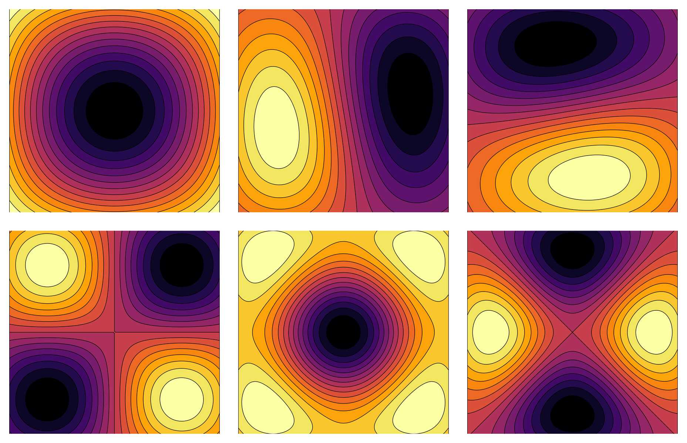
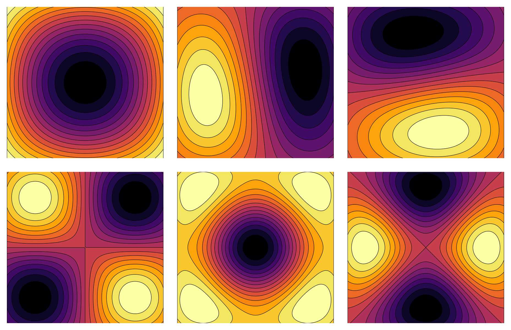
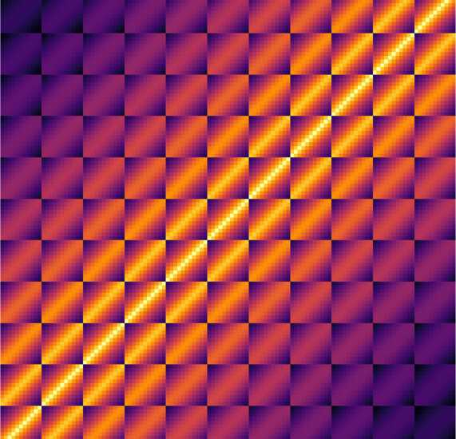
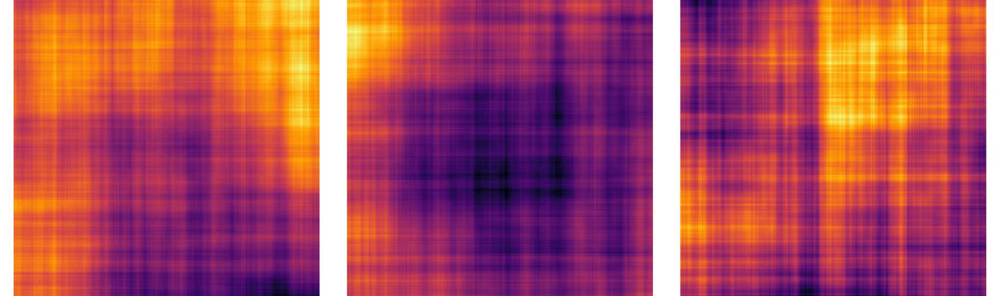

Tutorial
This tutorial contains some examples on how to use GaussianRandomFields.
Don't forget to import GaussianRandomFields and Plots before running the examples below:
using GaussianRandomFields
using PlotsTable of Contents
- Tutorial
A Gaussian random field is a function that describes a random quantity at each point in space. Below are three example realizations of a Gaussian random field with exponential covariance.
cov = CovarianceFunction(2, Exponential(.5))
pts = range(0, stop=1, length=1001)
grf = GaussianRandomField(cov, CirculantEmbedding(), pts, pts, minpadding=2001)
heatmap(grf)Package Overview
This package offers support to generate and sample from Gaussian random fields. Gaussian random fields can be classified as follows.

We offer support for stationary separable random fields and stationary non-separable isotropic and anisotropic random fields. This includes isotropic random fields with commonly used covariance functions, such as the exponential, Matérn, Whittle and Gaussian kernel, and anisotropic random fields, such as the anisotropic exponential kernel and the rotated anisotropic Matérn kernel. The Gaussian random fields can be defined on a rectangular structured grid, or on a Finite Element triangular unstructured mesh.
The basic syntax is as follows.
cov = CovarianceFunction(d, Kernel()) # covariance function in d dimensions with kernel Kernel()
pts_x = range(a, stop=b, length=n) # structured grid (see below for unstructured grids)
pts_y = range(a, stop=b, length=n) # ... (d times)
grf = GaussianRandomField(cov, Generator(), pts_x, pts_y) # Gaussian random field with generator Generator()
sample(grf) # take a sample of the Gaussian random fieldIn these expressions, Kernel() must be replaced by a call to either a predefined covariance kernel, or to a user-defined kernel. Here's a list of predefined kernels:
- exponential kernel, see
Exponential - linear (or triangular) kernel, see
Linear - spherical kernel, see
Spherical - Whittle kernel, see
Whittle - Gaussian (or squared exponential) kernel, see
Gaussian - Matérn kernel, see
Matern - anisotropic exponential kernel, see
AnisotropicExponential
The Gaussian random field generator Generator() must be replaced by a call to a predefined Gaussian random field generator:
- a Cholesky factorization of the covariance matrix, see
Cholesky - an eigenvalue decomposition of the covariance matrix, see
Spectral - a truncated Karhunen-Loève expansion, see
KarhunenLoeve - a circulant embedding, see
CirculantEmbedding
Examples
Let's first look at some examples.
1D Exponential Covariance Function
As a first example, consider the exponential covariance kernel, defined as
\[C(x, y) = σ \exp\left(-\displaystyle\frac{ρ}{λ}\right)\]
with $ρ = ||x - y||_p$, and where λ is a length scale.
exponential = Exponential(0.1) # 0.1 is the length scale λLet's define a one-dimensional exponential covariance function.
cov = CovarianceFunction(1, exponential) # 1 is the number of dimensions.Now, suppose the Gaussian process is defined on [0, 1].
pts = range(0, stop=1, length=1001) # 1001 is the number of pointsHere's how to compute the Gaussian process with exponential covariance function cov defined in the points pts.
grf = GaussianRandomField(cov, Cholesky(), pts)Here are some samples of the random field.
plot(grf)
plot!(grf)
plot!(grf)See also: Exponential, CovarianceFunction, GaussianRandomField, Cholesky
2D Matérn Covariance Function
In this second example, we switch from random processes (d=1) to random fields (d>1). A well-known stationary isotropic covariance kernel is the Matérn covariance kernel
\[C(x, y) = σ \frac{2^{1 - ν}}{Γ(ν)} \left(\frac{ρ}{λ}\right)^ν K_ν\left(\frac{ρ}{λ}\right)\]
with $ρ = ||x - y||_p$, where λ is a length scale and ν is the smoothness.
cov = CovarianceFunction(2, Matern(1/4, 3/4)) # length scale 1/4, smoothness 3/4We generate samples of this random field on a regular grid with grid spacing 1/400 using circulant embedding. This is a fast and exact sampling method that uses an FFT.
pts = range(0, stop=1, step=1/400)
grf = GaussianRandomField(cov, CirculantEmbedding(), pts, pts, minpadding=113)
heatmap(grf)Here is a visual comparison of the random field with a decreasing smoothness parameter ν.
for ν in [5/4, 1, 7/8, 3/4, 5/8, 1/2]
cov = CovarianceFunction(2, Matern(1/4, ν))
grf = GaussianRandomField(cov, CirculantEmbedding(), pts, pts, minpadding=625)
heatmap(grf)
endSee also: Matern, CovarianceFunction, GaussianRandomField, CirculantEmbedding
2D Anisotropic Covariance Function
In the last example, we focus on anisotropic random fields. These random fields behave differently in different directions. For example, the anisotropic exponential covariance kernel is defined as
\[C(x, y) = \exp(-ρᵀ A ρ)\]
where $ρ = x - y$ and $A$ is a positive definite matrix.
A = [1000 800; 800 1000]
cov = CovarianceFunction(2, AnisotropicExponential(A))Here are some samples of this random field.
See also: AnisotropicExponential, CovarianceFunction, GaussianRandomField, KarhunenLoeve
Gaussian Random Field Generators
Different methods for generating Gaussian random fields are available: Cholesky(), Spectral(), KarhunenLoeve(n) and CirculantEmbedding. We will briefly discuss these below.
Cholesky Factorization
A Gaussian random field generator based on the Cholesky factorization of the covariance matrix.
cov = CovarianceFunction(2, Matern(1/2, 5/4))
pts = range(0, stop=1, length=101)
grf = GaussianRandomField(cov, Cholesky(), pts, pts)
contourf(grf)If more points are used, and especially in higher dimensions, computing the Choleksy factorization becomes too expensive. Furthermore, the expansion can only be computed when the covariance matrix is symmetric positive definite (SPD). If this is not the case, try using Spectral() instead.
See Cholesky for more.
Eigenvalue Decomposition
A Gaussian random field generator based on the eigenvalue decomposition of the covariance matrix.
cov = CovarianceFunction(2, Linear(1))
pts = range(0, stop=1, length=51)
grf = GaussianRandomField(cov, Spectral(), pts, pts)
contourf(grf)See Spectral for more.
Karhunen-Loève Expansion
A Gaussian random field generator using a truncated Karhunen-Loève expansion with n terms.
cov = CovarianceFunction(2, Whittle(.1))
pts = range(0, stop=1, length=201)
grf = GaussianRandomField(cov, KarhunenLoeve(500), pts, pts)
heatmap(grf)The KL expansion uses a linear combination of eigenfunctions of the covariance operator, where the weights are determined by the magnitude of the eigenvalues.
plot_eigenvalues(grf)
plot_eigenfunction(grf, n) # n is eigenfunction number 1, 2, ..., 6 
Adding more terms to the expansion increases the approximation of the Gaussian random field.
for n in [1 2 5 10 20 50 100 200 500 1000]
grf = GaussianRandomField(cov, KarhunenLoeve(n), pts, pts)
@printf(" n = %4d | error = %0.4f\n", n, rel_error(grf))
end n = 1 | error = 0.7499
n = 2 | error = 0.4999
n = 5 | error = 0.4318
n = 10 | error = 0.3188
n = 20 | error = 0.1302
n = 50 | error = 0.0695
n = 100 | error = 0.0287
n = 200 | error = 0.0092
n = 500 | error = 0.0017
n = 1000 | error = 0.0004See KarhunenLoeve for more.
Circulant Embedding
A Gaussian random field generator that uses an FFT, but is restricted to rectangular structured grids. In this case, the covariance matrix has a Toeplitz structure (d=1), a block Toeplitz structure with Toeplitz blocks (d=2), ... This structure can be exploited by embedding the matrix in a larger circulant matrix, of which the eigenvalues can be computed very efficiently using FFT.
Here's the covariance matrix of the exponential covariance function in two dimensions.
cov = CovarianceFunction(2, Exponential(1))
pts = range(0, stop=1, length=11)
C = apply(cov, pts, pts)
heatmap(C)
A small catch here is that, although the covariance matrix is positive semi-definite, its circulant extension in general is not.
Hence, we must add some ghost points outside the domain of interest using the optional argument padding. If the matrix is not positive definite, an approximated Gaussian random field will still be computed using only the positive eigenvalues of the covariance matrix. Depending on the size of the smallest eigenvalue, this approximation may or may not be useable in practice.
cov = CovarianceFunction(2, Exponential(.5))
pts = range(0, stop=1, length=1001)
grf = GaussianRandomField(cov, CirculantEmbedding(), pts, pts, minpadding=2001)
heatmap(grf)See CirculantEmbedding for more.
Defining Custom Covariance Functions
Defining your own covariance function is easy. Here's an example using the two-dimensional rotated anisotropic Matérn covariance function.
using SpecialFunctions # for besselk and gamma
import GaussianRandomFields: shortname, apply
struct RotatedAnisotropicMatern{T} <: AnisotropicCovarianceStructure{T}
λ::T
ν::T
η::T
θ::T
σ::T
p::T
end
RotatedAnisotropicMatern(λ::Real, ν::Real; η::Real=1.0, θ::Real=0, σ::Real=1.0, p::Real=2) =
RotatedAnisotropicMatern{promote_type(typeof.((λ, ν, η, θ, σ, p))...)}(promote(λ, ν, η, θ, σ, p)...)
shortname(::RotatedAnisotropicMatern) = "rotated anisotropic Matérn"
rot(θ) = [cos(θ) -sin(θ); sin(θ) cos(θ)]
function apply(r::RotatedAnisotropicMatern, x::AbstractVector)
x_rotated = rot(r.θ * π/180) * x
ρ = 1/r.λ * sqrt(x_rotated[1]^2/r.η^2 + x_rotated[2]^2)
if iszero(ρ)
float(one(ρ))
else
2^(1 - r.ν) / gamma(r.ν) * (ρ / r.λ)^r.ν * besselk(r.ν, ρ / r.λ)
end
endThis covariance function has two additional parameters, η, the anisotropic ration, and θ, an angle, expressed in degrees. Here are some samples of the random field for different choices of the parameters η and θ.
cov = CovarianceFunction(2, RotatedAnisotropicMatern(1/4, 1/2, η=1/16, θ=45))
pts = range(0, stop=1, length=1001)
grf = GaussianRandomField(cov, CirculantEmbedding(), pts, pts)
heatmap(grf)Importing Covariance Functions from KernelFunctions.jl
The package KernelFunctions.jl provides a flexible framework for creating covariance functions. We can play nicely with a covariance function defined by KernelFunctions.jl by implementing a KernelWrapper type as follows:
using KernelFunctions
struct KernelWrapper{K, T} <: IsotropicCovarianceStructure{T}
κ::K
σ::Int
p::Int
end
KernelWrapper(κ::K) where K <: Kernel = KernelWrapper{K, Float64}(κ, 1, 2)
shortname(::KernelWrapper) = "KernelFunction"
apply(wrapper::KernelWrapper, x::Real) = KernelFunctions.kappa(wrapper.κ, x)This allows us to construct a Gaussian random field that uses, for example, the predefined GammaExponentialKernel kernel from KernelFunctions.jl.
cov = CovarianceFunction(2, KernelWrapper(GammaExponentialKernel(γ=1.5)))
pts = range(0, stop=1, length=100)
grf = GaussianRandomField(cov, CirculantEmbedding(), pts, pts, minpadding=200)
contourf(grf)Unstructured Grids
Suppose the computational domain is not a rectangular structured grid, but is instead given as a Finite Elements mesh with node table nodes and element table elements. As an example, consider the seven point star-shaped domain defined by star(). Samples of a random field defined on this domain can be computed as follows.
nodes, elements = star()
cov = CovarianceFunction(2, Matern(0.75, 1))
grf = GaussianRandomField(cov, Cholesky(), nodes, elements)To visualize the random field, we can use the function tricontourf from PyPlot.jl.
using PyPlotx = view(nodes, :, 1)
y = view(nodes, :, 2)
tricontourf(x, y, sample(grf), triangles=elements.-1)
An L-shape
For meshes with a large number of points, a Gaussian random field constructed using Cholesky() or Spectral() can be expensive. As an alternative, KarhunenLoeve(n) uses a bounding box approach that surrounds the Finite Element mesh.
nodes, elements = Lshape()
cov = CovarianceFunction(2, Matern(0.75, 1))
grf = GaussianRandomField(cov, KarhunenLoeve(6), nodes, elements)The eigenfunctions in the decomposition are now cut out versions of the eigenfunctions defined on the surrounding box.
x = view(nodes, :, 1)
y = view(nodes, :, 2)
tricontourf(x, y, view(grf.data.eigenfunc, :, n), triangles=elements.-1) # n = 1, 2, ..., 6If you insist on using the eigenfunctions defined on the Finite Element mesh, use Spectral() with the optional keyword argument n for the number of terms. This uses the eigs solver from Arpack.jl. Remark that these eigenfunctions are now qualitatively different.
grf = GaussianRandomField(cov, Spectral(), nodes, elements, n=6)tricontourf(x, y, view(grf.data.eigenfunc, :, n), triangles=elements.-1) # n = 1, 2, ..., 6More-dimensional Random Fields
We can define Gaussian random fields in any dimension. Here's an example with a 5-dimensional random field.
cov = CovarianceFunction(5, Whittle(.1))
pts = range(0, stop=1, length=11)
grf = GaussianRandomField(cov, CirculantEmbedding(), pts, pts, pts, pts, pts)
sample(grf)Separable Random Fields
A popular choice are separable covariance functions, such as the separable exponential covariance function. When the 1-norm is used (p=1), the eigenvalues and eigenfunctions in the KL expansion are known analytically.
cov = SeparableCovarianceFunction(Exponential(1, p=1), Exponential(1, p=1))
pts = range(0, stop=1, length=1001)
grf = GaussianRandomField(cov, KarhunenLoeve(1000), pts, pts)
heatmap(grf)Samples of a separable random field have some visual artifacts.
